Lists ในภาษา Python ในบทนี้ คุณจะได้เรียนรู้เกี่ยวกับโครงสร้างข้อมูลแบบ List
ในภาษา Python เราจะพูดถึงการสร้างและใช้งาน List ในเบื้องต้น
การใช้งานเมธอดและฟังก์ชันเพื่อจัดการข้อมูลภายใน List และการใช้งานคำสั่ง For loop กับ List
รวมถึงการ slicing
List (ลิสต์) คือโครงสร้างข้อมูลชนิดหนึ่งในภาษา Python ที่ใช้เก็บข้อมูลแบบลำดับ (Sequence)
โดยมี
Index เป็นตัวระบุตำแหน่งในการเข้าถึงข้อมูล เราสามารถใช้ List
เพื่อเก็บข้อมูลจำนวนมากและหลากหลายประเภทในเวลาเดียวกัน List
เป็นประเภทข้อมูลที่ใช้อย่างหลากหลายในการเขียนโปรแกรม นอกจากนี้ ในภาษา Python ยังมี built-in
function ที่สามารถทำงานกับ List และใน List ออบเจ็คเองก็มีเมธอดต่างๆ
เป็นจำนวนมากที่ช่วยอำนวยความสะดวกในการเขียนโปรแกรม
การประกาศและใช้งาน List
List นั้นเป็นตัวแปรประเภทหนึ่ง การใช้งานของมันจะเหมือนกับอาเรย์ในภาษาอื่นๆ
ในการประกาศ
List นั้นข้อมูลของมันจะอยู่ภายในเครื่องหมาย []
และคั่นสมาชิกแต่ละตัวด้วยเครื่องหมายคอมมา
, มาดูตัวอย่างการประกาศ List ในภาษา Python
 ในตัวอย่าง
เราได้สร้างตัวแปร List สามตัวแปร numbers เป็นตัวแปร List
ที่มีสมาชิกเป็นตัวเลขจำนวนเต็ม
6 ตัว names เป็น List ของ String ที่สำหรับเก็บชื่อและมี 5 รายชื่อ และสุดท้ายตัวแปร
mixed_type เป็น List ที่เก็บข้อมูลประเภทต่างๆ
แบบรวมกันในตัวแปรเดียวซึ่งมีสมาชิกทั้งหมด
5 ตัว ซึ่งทั้งหมดนี้เป็นการกำหนดสมาชิกให้กับ List พร้อมกับการประกาศตัวแปร ในภาษา
Python
เราสามารถกำหนดค่าให้กับ List หลังจากประกาศตัวแปรแล้วได้ มาดูตัวอย่าง
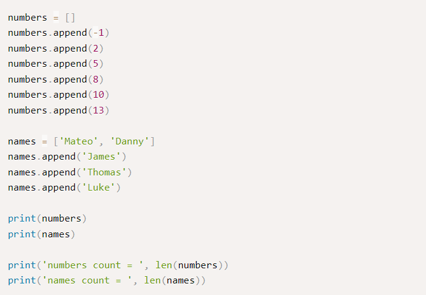
ในตัวอย่าง เป็นการกำหนดค่าให้กับ List หลังจากที่มันถูกสร้างแล้ว เราใช้เมธอด append()
เพื่อเพิ่มข้อมูลใหม่เข้าไปใน List ซึ่งข้อมูลที่เพิ่มเข้าจะอยู่ท้ายสุดและเรียง Index
เพิ่มขึ้นไปเรื่อยๆ โดยเริ่มจาก 0 ในตัวแปร numbers เราได้เพิ่ม 5 จำนวนเต็มเข้าไปใน
List
และในตัวแปร names ในตอนแรกได้ประกาศและกำหนดสองชื่อให้กับตัวแปร
และเพิ่มเข้าไปภายหลังอีก
3 ชื่อ และฟังก์ชัน len() ใช้เพื่อนับจำนวนสมาชิกภายใน List
นี่เป็นผลลัพธ์การทำงานของโปรแกรม
ในตัวอย่าง
เราได้สร้างตัวแปร List สามตัวแปร numbers เป็นตัวแปร List
ที่มีสมาชิกเป็นตัวเลขจำนวนเต็ม
6 ตัว names เป็น List ของ String ที่สำหรับเก็บชื่อและมี 5 รายชื่อ และสุดท้ายตัวแปร
mixed_type เป็น List ที่เก็บข้อมูลประเภทต่างๆ
แบบรวมกันในตัวแปรเดียวซึ่งมีสมาชิกทั้งหมด
5 ตัว ซึ่งทั้งหมดนี้เป็นการกำหนดสมาชิกให้กับ List พร้อมกับการประกาศตัวแปร ในภาษา
Python
เราสามารถกำหนดค่าให้กับ List หลังจากประกาศตัวแปรแล้วได้ มาดูตัวอย่าง
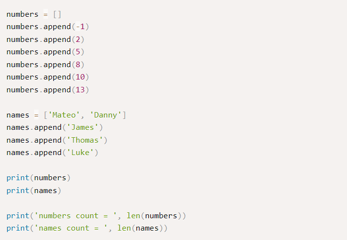
ในตัวอย่าง เป็นการกำหนดค่าให้กับ List หลังจากที่มันถูกสร้างแล้ว เราใช้เมธอด append()
เพื่อเพิ่มข้อมูลใหม่เข้าไปใน List ซึ่งข้อมูลที่เพิ่มเข้าจะอยู่ท้ายสุดและเรียง Index
เพิ่มขึ้นไปเรื่อยๆ โดยเริ่มจาก 0 ในตัวแปร numbers เราได้เพิ่ม 5 จำนวนเต็มเข้าไปใน
List
และในตัวแปร names ในตอนแรกได้ประกาศและกำหนดสองชื่อให้กับตัวแปร
และเพิ่มเข้าไปภายหลังอีก
3 ชื่อ และฟังก์ชัน len() ใช้เพื่อนับจำนวนสมาชิกภายใน List
นี่เป็นผลลัพธ์การทำงานของโปรแกรม
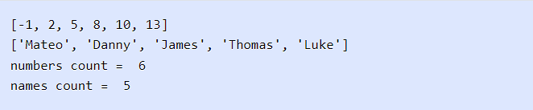
การเข้าถึงข้อมูลภายใน List
List นั้นใช้ Index สำหรับการเข้าถึงข้อมูล โดย Index ของ List
จะเป็นจำนวนเต็มที่เริ่มจาก
0 และเพิ่มขึ้นทีละ 1 ไปเรื่อยๆ ดังนั้น เราจึงสามารถเข้าถึงข้อมูลภายใน List
เพื่ออ่านหรืออัพเดทค่าได้โดยตรงผ่าน Index ของมัน นี่เป็นโค้ดการเข้าถึงข้อมูลภายใน
List
ในภาษา Python
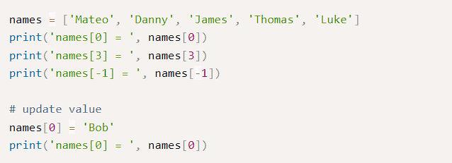
ในตัวอย่าง เรามีตัวแปร List ที่ชื่อว่า names ดังนั้น เพื่อเข้าถึงสมาชิกตัวแรกภายใน
List
ซึ่งก็คือ "Mateo" นั้นจะใช้คำสั่ง names[0] และสมาชิกที่มีค่าเป็น "Thomas"
ซึ่งอยู่ตำแหน่งที่ 4 จะใช้คำสั่ง names[3] สังเกตว่า Index จะลดลงหนึ่งเพราะ Index ของ
List นั้นเริ่มต้นจาก 0
 นอกจากนี้ เราสามารถเข้าถึงข้อมูลภายใน List โดยการใช้ Index เป็นจำนวนลบได้
โดยเริ่มจาก -1
ซึ่งเป็นสมาชิกตัวสุดท้ายของ List และ -2 สมาชิกตัวถัดมาและลดลงไปทีละ 1
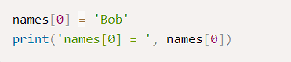
นี่เป็นการอัพเดทค่าของสมาชิกภายใน List
ในตัวอย่างเราได้เปลี่ยนค่าของสมาชิกในตำแหน่งแรกของ List จากเดิมที่เป็น "Mateo"
ให้เป็น
"Bob"
นอกจากนี้ เราสามารถเข้าถึงข้อมูลภายใน List โดยการใช้ Index เป็นจำนวนลบได้
โดยเริ่มจาก -1
ซึ่งเป็นสมาชิกตัวสุดท้ายของ List และ -2 สมาชิกตัวถัดมาและลดลงไปทีละ 1
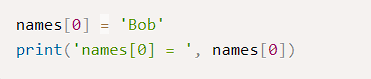
นี่เป็นการอัพเดทค่าของสมาชิกภายใน List
ในตัวอย่างเราได้เปลี่ยนค่าของสมาชิกในตำแหน่งแรกของ List จากเดิมที่เป็น "Mateo"
ให้เป็น
"Bob"
 การอ่านค่าใน List ด้วยคำสัง For loop
การอ่านค่าใน List ด้วยคำสัง For loop
เนื่องจาก List นั้นเก็บข้อมูลเป็นแบบลำดับและใช้ Index ในการเข้าถึงข้อมูล ดังนั้น
เราจึงมักจะใช้คำสั่งวนซ้ำสำหรับการเขียนโปรแกรมที่ทำงานกับ List
เพราะทำให้การทำงานรวดเร็วและง่ายขึ้น เช่น การใช้คำสั่งวนซ้ำวนอ่านค่าใน List
ที่มีข้อมูลเป็นจำนวนมาก เป็นต้น ต่อไปมาดูตัวอย่างการใช้งานคำสั่ง For loop กับ List
ในภาษา Python
 ในตัวอย่าง เป็นการวนอ่านค่าภายใน List ด้วยการใช้คำสั่ง For loop
โดยเราได้แยกการทำงานออกเป็นสองลูป ในลูปแรกเป็นการใช้งานคำสั่ง For loop
เพื่อวนอ่านค่าภายใน List numbers โดยตรง
โปรแกรมจะวนอ่านค่าไปทีละค่าและนำค่าในแต่ละรอบที่ได้มาใส่ในตัวแปร n
เราได้ทำการแสดงผลตัวเลขภายใน List และหาผลรวมของตัวเลขภายใน List โดยเก็บไว้ในตัวแปร
sum
ในลูปที่สอง เป็นการใช้คำสั่ง For loop เช่นกัน แต่ในตอนนี้เราจะสร้าง Index
ขึ้นมาโดยการใช้ตัวแปร i เป็นตัวรัน Index จาก 0 ถึงขนาดตัวสุดท้ายของ List
ที่สร้างจากฟังก์ชัน range() และเราแสดงผลชื่อในตัวพิมพ์ใหญ่ด้วยเมธอด upper() ของ
String
ในตัวอย่าง เป็นการวนอ่านค่าภายใน List ด้วยการใช้คำสั่ง For loop
โดยเราได้แยกการทำงานออกเป็นสองลูป ในลูปแรกเป็นการใช้งานคำสั่ง For loop
เพื่อวนอ่านค่าภายใน List numbers โดยตรง
โปรแกรมจะวนอ่านค่าไปทีละค่าและนำค่าในแต่ละรอบที่ได้มาใส่ในตัวแปร n
เราได้ทำการแสดงผลตัวเลขภายใน List และหาผลรวมของตัวเลขภายใน List โดยเก็บไว้ในตัวแปร
sum
ในลูปที่สอง เป็นการใช้คำสั่ง For loop เช่นกัน แต่ในตอนนี้เราจะสร้าง Index
ขึ้นมาโดยการใช้ตัวแปร i เป็นตัวรัน Index จาก 0 ถึงขนาดตัวสุดท้ายของ List
ที่สร้างจากฟังก์ชัน range() และเราแสดงผลชื่อในตัวพิมพ์ใหญ่ด้วยเมธอด upper() ของ
String
 List slicing
List slicing
ในภาษา Python เราสามารถตัดข้อมูลจาก List หนึ่งแล้วนำไปสร้างเป็น List ใหม่ได้
โดยวิธีดังกล่าวนั้นเรียกกว่า slicing ในการตัดข้อมูลใน List นั้นจะทำในรูปแบบ [a:b]
เมื่อ
a เป็น Index เริ่มต้นและ b เป็น Index ก่อนสมาชิกตัวสุดท้ายที่ต้องการตัด
มาดูตัวอย่างของ
list slicing
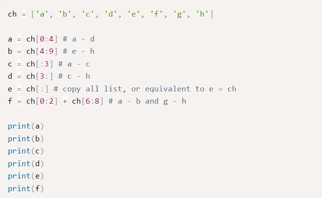
ในตัวอย่าง เรามีตัวแปร ch ซึ่งมีสมาชิกเป็นตัวอักษรในภาษาอังกฤษจาก a ถึง h
หลังจากนั้นเราได้ทำการ slice ข้อมูลจาก List ดังกล่าว ในตัวแปร a
นั้นเป็นการตัดเอาข้อมูลจากตำแหน่งที่ 0 ถึง 3 มา ในตัวแปร b นั้นตัดเอาตำแหน่งที่ 4
ถึง 8
ถัดมาเป็นตัวแปร c d และ e เป็นการเว้นว่างตำแหน่งข้างหน้าและข้างหลัง
ซึ่งถ้าตำแหน่งข้างหน้าถูกเว้นว่างไว้ เป็นการตัดเอาสมาชิกตั้งแต่ตำแหน่งเริ่มต้นของ
List
และถ้าตำแหน่งสิ้นสุดถูกเว้นว่างไว้ เป็นการตัดเอาจนถึงสมาชิกตัวสุดท้ายของ List
และในตัวแปร f เป็นการตัดเอาสองส่วนของ List มาต่อกัน ในการนำสอง List
มาต่อกันนั้นเราจะใช้ตัวดำเนินการ +
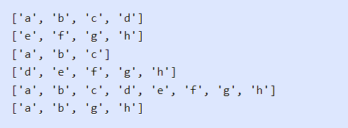
การใช้งานคำสั่ง del เพื่อลบข้อมูลใน List
คำสั่ง del เป็นคำสั่งที่ใช้สำหรับลบตัวแปรใดๆ
ออกไปจากหน่วยความจำหรือใช้ยกเลิกตัวแปรที่เคยประกาศไปแล้ว เราสามารถใช้คำสั่ง del
เพื่อลบสมาชิกภายใน List ได้เช่นเดียวกัน มาดูตัวอย่างการใช้งานคำสั่ง del ในภาษา
Python
 ในตัวอย่าง เป็นการใช้งานคำสั่ง del สำหรับลบสมาชิกภายใน List ในตอนแรก เราได้ลบอักษร a
ออกไปจาก List ซึ่งสมาชิกตัวแรกนั้นจะมี Index เป็น 0 ดังนั้น เมื่อการลบเสร็จสิ้น List
จะทำการเลื่อนตัวอักษร b มายัง Index 0 แทน ซึ่งสิ่งนี้เป็นสภาวะการสูญเสียตำแหน่งของ
List
หรือ Index lose หลังจากนั้น เราได้ลบโดยการใช้วิธีการกำหนด Index แบบ slicing
เราได้ทำการลบค่าจาก Index 0 ถึง 3 ซึ่งเป็นการลบตัวอักษรจาก e ถึง f
และในคำสั่งสุดท้ายเป็นการลบข้อมูลภายใน List ทั้งหมด
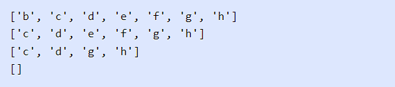
Warning: จากตัวอย่างข้างต้นนั้น เมื่อคุณต้องการลบข้อมูลทั้งหมดภายใน List เราจะใช้
del
ch[:] เพราะว่าเป็นการลบแบบ slicing
จากตำแหน่งแรกถึงตำแหน่งสุดท้ายและจะทำให้มันกลายเป็น
List ว่างปล่าว เมื่อคุณใช้คำสั่ง del ch จะหมายความว่าลบตัวแปรออกไปจากหน่วยความจำแทน
Summary
ในตัวอย่าง เป็นการใช้งานคำสั่ง del สำหรับลบสมาชิกภายใน List ในตอนแรก เราได้ลบอักษร a
ออกไปจาก List ซึ่งสมาชิกตัวแรกนั้นจะมี Index เป็น 0 ดังนั้น เมื่อการลบเสร็จสิ้น List
จะทำการเลื่อนตัวอักษร b มายัง Index 0 แทน ซึ่งสิ่งนี้เป็นสภาวะการสูญเสียตำแหน่งของ
List
หรือ Index lose หลังจากนั้น เราได้ลบโดยการใช้วิธีการกำหนด Index แบบ slicing
เราได้ทำการลบค่าจาก Index 0 ถึง 3 ซึ่งเป็นการลบตัวอักษรจาก e ถึง f
และในคำสั่งสุดท้ายเป็นการลบข้อมูลภายใน List ทั้งหมด
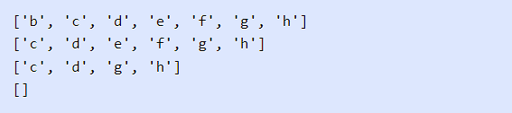
Warning: จากตัวอย่างข้างต้นนั้น เมื่อคุณต้องการลบข้อมูลทั้งหมดภายใน List เราจะใช้
del
ch[:] เพราะว่าเป็นการลบแบบ slicing
จากตำแหน่งแรกถึงตำแหน่งสุดท้ายและจะทำให้มันกลายเป็น
List ว่างปล่าว เมื่อคุณใช้คำสั่ง del ch จะหมายความว่าลบตัวแปรออกไปจากหน่วยความจำแทน
Summary
ในบทนี้ คุณได้เรียนรู้เกี่ยวกับการประกาศและใช้งาน List ในภาษา Python
นอกจากนี้เรายังใช้คำสัง For loop เพื่อให้ง่ายในการอ่านข้อมูลภายใน List
รวมทั้งการตัดข้อมูลใน List ด้วยการ slicing และการใช้คำสั่ง del เพื่อลบข้อมูลภายใน
List
ออกไป ในบทต่อไป จะเป็นการใช้งานฟังก์ชันและเมธอดของ List
Tuples ในภาษา Python
ในบทนี้ คุณจะได้เรียนรู้เกี่ยวกับ Tuple ในภาษา Python และทำความรู้จักกับว่า Tuple
คืออะไร เราจะพูดถึงการสร้างและใช้งาน Tuple และตอนที่จะต้องใช้งานในการเขียนโปรแกรม
นอกจากนี้ เรายังจะพูดถึงการใช้งานเมธอดและฟังก์ชันต่างๆ ของ Tuple
ในการเขียนโปรแกรมภาษา Python นั้น Tuple จะคล้ายกับ List แต่สิ่งที่แตกต่างกันคือ
Tuple
นั้นเป็นประเภทข้อมูลที่ไม่สามารถเปลี่ยนแปลงได้ (Immutable) หรือกล่าวอีกนัยหนึ่ง
หลังจากที่ประกาศตัวแปรและกำหนดค่าให้กับ Tuple แล้ว
มันจะไม่สามารถเปลี่ยนแปลงค่าได้ในภายหลัง ในขณะที่ List สามารถทำได้
เนื่องจากว่า Tuples นั้นไม่สามารถเปลี่ยนแปลงค่าได้
ดังนั้นมันจึงมักจะใช้เก็บข้อมูลที่มีประเภทแตกต่างกันซึ่งจะทำงานได้ดีกว่า List
และในการใช้งาน Loop กับ Tuple จะเพิ่มความเร็วขึ้นเล็กน้อย นอกจากนี้เรายังสามารถใช้
Tuple
เป็นค่าคงที่สำหรับข้อมูลที่ไม่ต้องการให้เปลี่ยนแปลงได้
การประกาศ Tuple ในภาษา Python
ในภาษา Python การประกาศ Tuple นั้นสามารถทำได้หลายวิธี
รูปแบบพื้นฐานของมันคือสมาชิกของ
Tuple ทุกตัวจะอยู่ภายในวงเล็บ () และคั่นสมาชิกแต่ละตัวด้วยเครื่องหมายคอมมา (,)
นี่เป็นตัวอย่างของการประกาศ Tuple ในรูปแบบต่างๆ
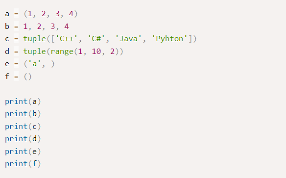
ในตัวอย่าง เป็นการประกาศ Tuple ในตัวแปร a และ b เป็นรูปแบบมาตฐานในการประกาศ Tuple
แต่ในตัวแปร b นั้นจะเป็นรูปแบบสั้นซึ่งไม่แนะนำสำหรับการฝึกปฏิบัติที่ดี และในตัวแปร c
และ
d นั้นเป็นการสร้าง Tuple ด้วยการใช้ฟังก์ชัน tuple() โดยสร้างจาก List
หรือออบเจ็คที่สามารถวนรอบได้ (Iterable) จากฟังก์ชัน range()
และในตัวแปร e นั้นเป็นการประกาศ Tuple ที่มีสมาชิกเพียงตัวเดียวจะต้องใส่คอมมา (,)
ต่อท้ายให้กับสมาชิกเสมอ เพราะไม่เช่นนั้นตัวแปรดังกล่าวจะเป็น String แทน
และในตัวแปรสุดท้าย f เป็นการประกาศ Tuple ว่างเปล่า หลังจากนั้นเราแสดงผลค่าของ Tuple
ออกทางหน้าจอ
 การเข้าถึงสมาชิกภายใน Tuple
การเข้าถึงสมาชิกภายใน Tuple
ในการเข้าถึงสมาชิกภายใน Tuple นั้นจะใช้ Index เช่นเดียวกับ List โดยสมาชิกตัวแรกจะมี
Index เป็นศูนย์ และสำหรับสมาชิกตัวต่อไปจะเพิ่มขึ้นทีละ 1 Tuple
มักจะใช้กับประเภทข้อมูลที่แตกต่างกันและสมาชิกของมันจะไม่สามารถเปลี่ยนแปลงค่าได้
นั่นคือ
Tuple สามารถอ่านได้เพียงอย่างเดียว มาดูตัวอย่างการอ่านค่าของ Tuple ในภาษา Python
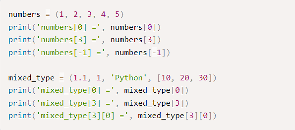
ในตัวอย่าง เป็นการเข้าถึงสมาชิกใน Tuple เพื่ออ่านค่าภายใน ตัวแปร numbers นั้นเป็น
Tuple
ที่มีสมาชิกเป็นเพียงตัวเลข Integer เราเข้าถึงสมาชิกตัวแรกของมันด้วย numbers[0]
และสมาชิกตัวที่สี่ด้วย numbers[3] เราสามารถใช้ Index เป็นจำนวนเต็มลบได้
โดยเริ่มตั้งแต่
-1 ซึ่งเป็นสมาชิกตัวสุดท้ายใน Tuple
ต่อไปเป็นการประกาศตัวแปร mixed_type ซึ่งประกอบไปด้วยข้อมูลประเภทต่างๆ เช่น ตัวเลข
String
และ List และเราเข้าถึงสมาชิกผ่านทาง Index เช่นเดิม สำหรับ Sequence ที่ซ้อนกัน
เราจะใช้รูปแบบ Index ของการเข้าถึงเป็น [m][n] เหมือนในคำสั่ง mixed_type[3][0]
 การอ่านค่าใน Tuple ด้วยคำสั่ง For loop
การอ่านค่าใน Tuple ด้วยคำสั่ง For loop
เนื่องจาก Tuple นั้นเป็นข้อมูลแบบ Sequence เช่นเดียวกับ List
ดังนั้นมันจึงสะดวกที่จะใช้คำสังวนซ้ำ เช่น For loop เพื่อวนอ่านข้อมูลใน Tuple
มาดูตัวอย่างการอ่านค่าสมาชิกของ Tuple ด้วยการใช้คำสั่ง For loop ในภาษา Python
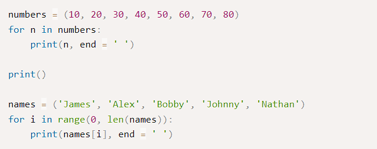ในตัวอย่าง
เป็นการใช้ For loop เพื่อวนอ่านค่าใน Tuple ในลูปแรกเป็นการวนอ่านค่าในตัวแปร numbers
แบบทีละค่าด้วยการใช้คำสั่ง in ในการวนแต่ละรอบโปรแกรมจะนำค่าภายใน Tuple
มาเก็บไว้ในตัวแปร
n ในลูปที่สองเป็นการใช้ For loop เพื่อสร้าง Index ตั้งแต่ 0
ถึงตัวสุดท้ายและเข้าถึงค่าของ Tuple ผ่านทาง Index ของมัน
 Tuple slicing
Tuple slicing
ในการทำงานกับ Tuple เราสามารถแบ่งมันออกเป็นส่วนย่อยๆ ได้เช่นเดียวกับ List
ด้วยวิธีการที่เรียกว่า Slicing โดยปกติแล้วมันมักจะใช้สำหรับคัดลอกข้อมูลจาก Tuple
เดิมเพื่อสร้างอันใหม่ ซึ่งการ slice นั้นจะทำในรูปแบบของ Index ของ Tuple [start:end]
มาดูตัวอย่าง
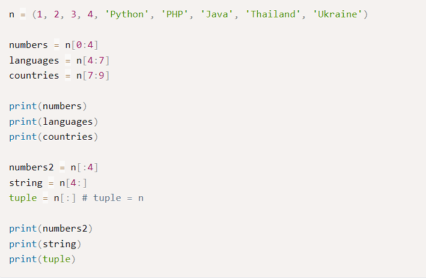
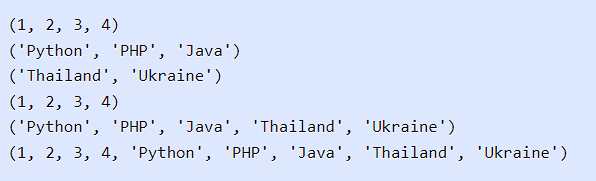
Python Tuple methods
เนื่องจากค่าของ Tuple นั้นไม่สามารถแก้ไขได้ ดังนั้นมันจึงมีเมธอดน้อยกว่าที่ List มี
คือเมธอด count() ใช้สำหรับนับจำนวนออบเจ็คใน Tuple และเมธอด index()
ใช้สำหรับหาตำแหน่งแรกของออบเจ็คใน Tuple มาดูตัวอย่างการใช้เมธอดของ Tuple ในภาษา
Python
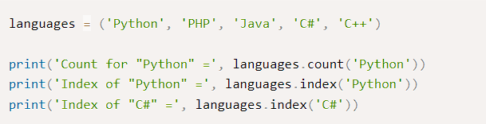
ในตัวอย่าง เป็นการใช้งานเมธอดของ Tuple เรามีตัวแปร languages
สำหรับเก็บชื่อของภาษาเขียนโปรแกรม และเราใช้เมธอด count() เพื่อนับว่าพบ 'Python'
กี่อันภายใน Tuple และเมธอด index() ใช้สำหรับหา Index ของออบเจ็คภายใน Tuple
 Python Tuple functions
Python Tuple functions
ในภาษา Python นั้นมีฟังก์ชันต่างๆ สำหรับทำงานกับ Sequence โดยทั่วไปแล้ว List และ
Tuple
นั้นจะสามารถใช้งานฟังก์ชันเหล่านี้ได้เหมือนกัน นี่เป็นตารางของ built-in function ของ
Tuple
 Summary
Summary
ในบทนี้ คุณได้เรียนรู้เกี่ยวกับออบเจ็คที่ไม่สามารถเปลี่ยนแปลงค่าได้ Tuple
การสร้างและใช้งาน Tuple ในภาษา Python การเข้าถึงสมาชิกของมัน และการแบ่งข้อมูลโดยการ
Slice เพื่อแยกข้อมูลจาก Tuple เดิมให้เป็นอันใหม่ เราได้แนะนำให้คุณรู้จักกับเมธอดใน
Tuple
พร้อมทั้งตัวอย่างการใช้งาน และ built-in functions ของ Tuple